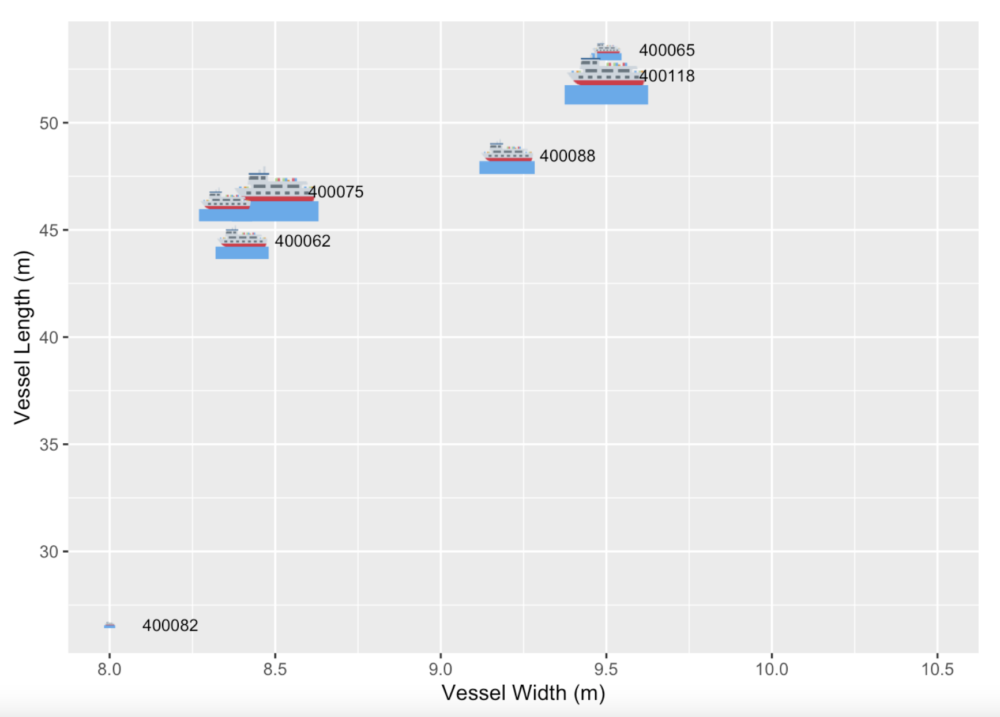
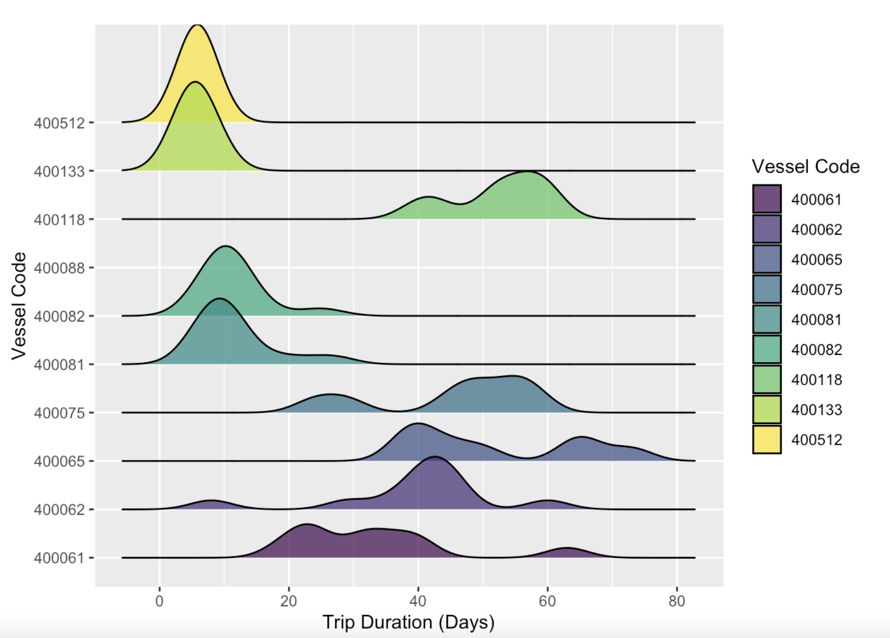
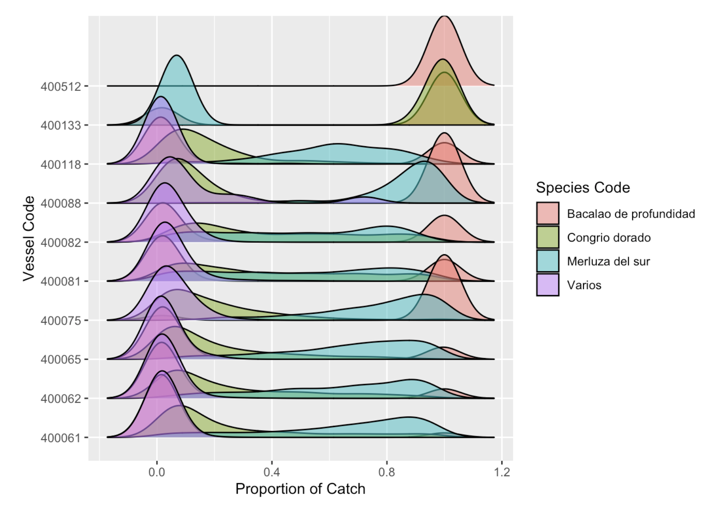
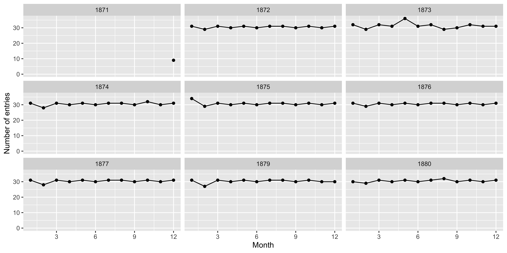
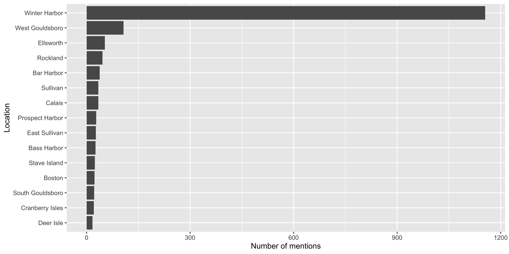
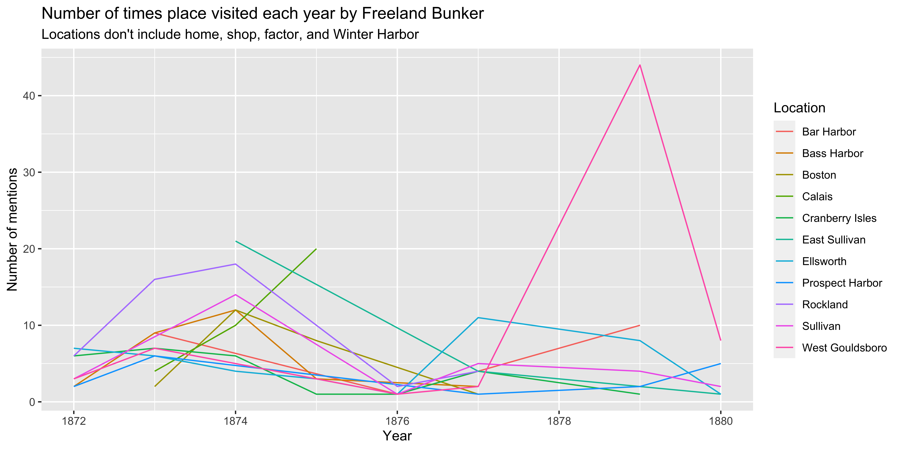

Wrangling and Visualizing Historical Texts
Acknowledgements

Slide Structure and Design inspired by Julia Silge
What can you do with R? A snapshot
Influence of target species on fishing effort

Woman on boat holding a fish and a crab
Who is fishing?
Plot showing the vessel length and width as boats on a scatter plot where the size of the boat is proportional to the carrying capacity of the vessel
How are vessels fishing?
Plot showing the distribution of trip length by vessel
What are vessels targeting?
Plot showing the distribution of species in the catch by weight by vessel
Where are they fishing?
What else can R do?
Create open source learning resources
Code Mitten Patterns
Choose colors for mitten patterns
Monitor fish runs
Course websites!
- Get you excited about data and analysis
- Explore ways you could use it in projects
- Get you coding and exploring text data
- Teach you tools to set data free and release it into the world.
Let’s install some packages
Learning Objectives:
Gain familiarity with - How to read in data using read_excel - How to select columns using select - How to create new variables using mutate - How to summarize and arrange data using count and arrange - How to group and calculate multiple things - How to correct entries using mutate and case_when - How to visualize and map the data using ggplot and leaflet
The Journals (1870-1906)
9 journals (1871-1880) transcribed
library(readxl)
journal_1871_1872 <- read_excel("data/journal_1871_1872.xlsx")
journal_1873 <- read_excel("data/journal_1873.xlsx")
journal_1874 <- read_excel("data/journal_1874.xlsx")
journal_1875 <- read_excel("data/journal_1875.xlsx")
journal_1876 <- read_excel("data/journal_1876.xlsx")
journal_1877 <- read_excel("data/journal_1877.xlsx")
journal_1878 <- read_excel("data/journal_1878.xlsx")
journal_1879 <- read_excel("data/journal_1879.xlsx")
journal_1880 <- read_excel("data/journal_1880.xlsx")Keeping Track
# We want to keep track of the journals
library(tidyverse)
journal_1871_1872$journal <- 1
journal_1873$journal <- 2
journal_1874$journal <- 3
journal_1875$journal <- 4
journal_1876$journal <- 5
journal_1877$journal <- 6
journal_1878$journal <- 7
journal_1879$journal <- 8
journal_1880$journal <- 9
journals <- dplyr::bind_rows(journal_1871_1872, journal_1873, journal_1874,
journal_1875, journal_1876, journal_1877,
journal_1878, journal_1879, journal_1880)We have a lot of variables recorded!
glimpse(journals)
#> Rows: 3,951
#> Columns: 38
#> $ date_mdy <chr> "12/23/1871", "12/24/1871", "12/25/1871", "12/…
#> $ month <chr> "December", "December", "December", "December"…
#> $ journal_entry <chr> "Was married at home in evening by William Ran…
#> $ location <chr> "Winter Harbor", "NA", "Winter Harbor", "Winte…
#> $ location_accuracy <chr> NA, NA, NA, NA, NA, NA, NA, NA, NA, NA, NA, NA…
#> $ local_place <chr> "Home", NA, "Hall", "Home", "Home", "Home", "S…
#> $ local_place_accuracy <lgl> NA, NA, NA, NA, NA, NA, NA, NA, NA, NA, NA, NA…
#> $ latitude <chr> NA, NA, NA, NA, NA, NA, NA, NA, NA, NA, NA, NA…
#> $ latitude_origin <chr> NA, NA, NA, NA, NA, NA, NA, NA, NA, NA, NA, NA…
#> $ longitude <chr> NA, NA, NA, NA, NA, NA, NA, NA, NA, NA, NA, NA…
#> $ longitude_origin <chr> NA, NA, NA, NA, NA, NA, NA, NA, NA, NA, NA, NA…
#> $ transcription <chr> "confident", "confident", "confident", "confid…
#> $ quantity <chr> "NA", "NA", "NA", "NA", "NA", "NA", "NA", "NA"…
#> $ unit <chr> "NA", "NA", "NA", "NA", "NA", "NA", "NA", "NA"…
#> $ item <chr> "NA", "NA", "NA", "NA", "NA", "NA", "NA", "NA"…
#> $ letter <chr> "no letter", "no letter", "no letter", "no let…
#> $ letter_from <chr> NA, NA, NA, NA, NA, NA, NA, NA, NA, NA, NA, NA…
#> $ letter_to <chr> NA, NA, NA, NA, NA, NA, NA, NA, NA, NA, NA, NA…
#> $ wind_direction_am <chr> NA, NA, NA, NA, NA, NA, NA, NA, NA, NA, NA, NA…
#> $ wind_direction_pm <chr> NA, NA, NA, NA, NA, NA, NA, NA, NA, NA, NA, NA…
#> $ wind_direction_night <chr> NA, NA, NA, NA, NA, NA, NA, NA, NA, NA, NA, NA…
#> $ wind_speed_am <chr> NA, NA, NA, NA, NA, NA, NA, NA, NA, NA, NA, NA…
#> $ wind_speed_pm <chr> NA, NA, NA, NA, NA, NA, NA, NA, NA, NA, NA, NA…
#> $ wind_speed_night <chr> NA, NA, NA, NA, NA, NA, NA, NA, NA, NA, NA, NA…
#> $ weather_condition_am <chr> NA, NA, NA, NA, NA, NA, NA, NA, NA, NA, NA, NA…
#> $ weather_condition_pm <chr> NA, NA, NA, NA, NA, NA, NA, NA, NA, NA, NA, NA…
#> $ weather_condition_night <chr> NA, NA, NA, NA, NA, NA, NA, NA, NA, NA, NA, NA…
#> $ temperature_am <chr> NA, NA, NA, NA, NA, NA, NA, NA, NA, NA, NA, NA…
#> $ temperature_pm <chr> NA, NA, NA, NA, NA, NA, NA, NA, NA, NA, NA, NA…
#> $ temperature_night <dbl> NA, NA, NA, NA, NA, NA, NA, NA, NA, NA, NA, NA…
#> $ image_path <chr> "NA", "NA", "NA", "NA", "NA", "NA", "NA", "NA"…
#> $ image_description <chr> NA, NA, NA, NA, NA, NA, NA, NA, NA, NA, NA, NA…
#> $ recorder <chr> "NH", "NH", "NH", "NH", "NH", "NH", "NH", "NH"…
#> $ notes <chr> "Esqr? Esquire", "to?", "Christmas tree?", NA,…
#> $ second_check <chr> "WD", NA, "WD", NA, "WD", NA, NA, NA, NA, NA, …
#> $ journal <dbl> 1, 1, 1, 1, 1, 1, 1, 1, 1, 1, 1, 1, 1, 1, 1, 1…
#> $ transcription_accuracy <chr> NA, NA, NA, NA, NA, NA, NA, NA, NA, NA, NA, NA…
#> $ ...1 <chr> NA, NA, NA, NA, NA, NA, NA, NA, NA, NA, NA, NA…Exploring a subset using select
(journals_sub <- journals %>%
select(date_mdy, journal_entry, location))
#> # A tibble: 3,951 × 3
#> date_mdy journal_entry location
#> <chr> <chr> <chr>
#> 1 12/23/1871 Was married at home in evening by William Rand Esqr. Winter …
#> 2 12/24/1871 Went to meeting. NA
#> 3 12/25/1871 Shooting match all day in the evening to Christmas tree … Winter …
#> 4 12/26/1871 About home at work fobbing. Winter …
#> 5 12/27/1871 Work about home reed letter from N. H. Higgins Ins agt. Winter …
#> 6 12/28/1871 Work about home. Winter …
#> 7 12/29/1871 To work in shop. Winter …
#> 8 12/30/1871 To work in shop. Winter …
#> 9 12/31/1871 Went to meeting. NA
#> 10 1/1/1872 Work in shop. Winter …
#> # ℹ 3,941 more rowsCreating date variables using lubridate
library(lubridate)
(journals_sub <- journals_sub %>%
mutate(date_mdy = mdy(date_mdy),
year = year(date_mdy),
month = month(date_mdy)))
#> # A tibble: 3,951 × 5
#> date_mdy journal_entry location year month
#> <date> <chr> <chr> <dbl> <dbl>
#> 1 1871-12-23 Was married at home in evening by William Ra… Winter … 1871 12
#> 2 1871-12-24 Went to meeting. NA 1871 12
#> 3 1871-12-25 Shooting match all day in the evening to Chr… Winter … 1871 12
#> 4 1871-12-26 About home at work fobbing. Winter … 1871 12
#> 5 1871-12-27 Work about home reed letter from N. H. Higgi… Winter … 1871 12
#> 6 1871-12-28 Work about home. Winter … 1871 12
#> 7 1871-12-29 To work in shop. Winter … 1871 12
#> 8 1871-12-30 To work in shop. Winter … 1871 12
#> 9 1871-12-31 Went to meeting. NA 1871 12
#> 10 1872-01-01 Work in shop. Winter … 1872 1
#> # ℹ 3,941 more rowsHow often did Freeland write?
Where did Freeland go? Step by Step
Start with the dataset
journals_sub
#> # A tibble: 3,951 × 5
#> date_mdy journal_entry location year month
#> <date> <chr> <chr> <dbl> <dbl>
#> 1 1871-12-23 Was married at home in evening by William Ra… Winter … 1871 12
#> 2 1871-12-24 Went to meeting. NA 1871 12
#> 3 1871-12-25 Shooting match all day in the evening to Chr… Winter … 1871 12
#> 4 1871-12-26 About home at work fobbing. Winter … 1871 12
#> 5 1871-12-27 Work about home reed letter from N. H. Higgi… Winter … 1871 12
#> 6 1871-12-28 Work about home. Winter … 1871 12
#> 7 1871-12-29 To work in shop. Winter … 1871 12
#> 8 1871-12-30 To work in shop. Winter … 1871 12
#> 9 1871-12-31 Went to meeting. NA 1871 12
#> 10 1872-01-01 Work in shop. Winter … 1872 1
#> # ℹ 3,941 more rowsWhere did Freeland go? Step by Step
And then filter for only known locations.
journals_sub %>%
filter(is.na(location) == FALSE, location != "NA")
#> # A tibble: 1,791 × 5
#> date_mdy journal_entry location year month
#> <date> <chr> <chr> <dbl> <dbl>
#> 1 1871-12-23 Was married at home in evening by William Ra… Winter … 1871 12
#> 2 1871-12-25 Shooting match all day in the evening to Chr… Winter … 1871 12
#> 3 1871-12-26 About home at work fobbing. Winter … 1871 12
#> 4 1871-12-27 Work about home reed letter from N. H. Higgi… Winter … 1871 12
#> 5 1871-12-28 Work about home. Winter … 1871 12
#> 6 1871-12-29 To work in shop. Winter … 1871 12
#> 7 1871-12-30 To work in shop. Winter … 1871 12
#> 8 1872-01-01 Work in shop. Winter … 1872 1
#> 9 1872-01-02 Work in shop. Winter … 1872 1
#> 10 1872-01-03 Work in shop. Winter … 1872 1
#> # ℹ 1,781 more rowsWhere did Freeland go? Step by Step
And then separate rows so each location is on its own row.
journals_sub %>%
filter(is.na(location) == FALSE, location != "NA") %>%
separate_rows(location, sep = ", ")
#> # A tibble: 2,364 × 5
#> date_mdy journal_entry location year month
#> <date> <chr> <chr> <dbl> <dbl>
#> 1 1871-12-23 Was married at home in evening by William Ra… Winter … 1871 12
#> 2 1871-12-25 Shooting match all day in the evening to Chr… Winter … 1871 12
#> 3 1871-12-26 About home at work fobbing. Winter … 1871 12
#> 4 1871-12-27 Work about home reed letter from N. H. Higgi… Winter … 1871 12
#> 5 1871-12-28 Work about home. Winter … 1871 12
#> 6 1871-12-29 To work in shop. Winter … 1871 12
#> 7 1871-12-30 To work in shop. Winter … 1871 12
#> 8 1872-01-01 Work in shop. Winter … 1872 1
#> 9 1872-01-02 Work in shop. Winter … 1872 1
#> 10 1872-01-03 Work in shop. Winter … 1872 1
#> # ℹ 2,354 more rowsWhere did Freeland go? Step by Step
And then count the number of times he was at that location
journals_sub %>%
filter(is.na(location) == FALSE, location != "NA") %>%
separate_rows(location, sep = ", ") %>%
count(location)
#> # A tibble: 281 × 2
#> location n
#> <chr> <int>
#> 1 " Handkerchief Light Ship" 1
#> 2 " North East Harbor" 1
#> 3 "Albany Railroad Wharf" 9
#> 4 "Atlantic wharf" 2
#> 5 "Azores/Western Islands" 1
#> 6 "Baker Island" 2
#> 7 "Baker's Island" 1
#> 8 "Bakers Island" 1
#> 9 "Bangor" 5
#> 10 "Bar Habor" 3
#> # ℹ 271 more rowsWhere did Freeland go? Step by Step
And then arrange the locations in descending order from most visited to least visited.
journals_sub %>%
filter(is.na(location) == FALSE, location != "NA") %>%
separate_rows(location, sep = ", ") %>%
count(location) %>%
arrange(desc(n))
#> # A tibble: 281 × 2
#> location n
#> <chr> <int>
#> 1 Winter Harbor 1155
#> 2 West Gouldsboro 107
#> 3 Ellsworth 53
#> 4 Rockland 46
#> 5 Bar Harbor 38
#> 6 Calais 34
#> 7 Sullivan 34
#> 8 Prospect Harbor 28
#> 9 East Sullivan 27
#> 10 Bass Harbor 26
#> # ℹ 271 more rowsLess common places visited?
journals_sub %>%
filter(is.na(location) == FALSE, location != "NA") %>%
separate_rows(location, sep = ", ") %>%
count(location) %>%
slice_min(n, n = 15, with_ties = FALSE)
#> # A tibble: 15 × 2
#> location n
#> <chr> <int>
#> 1 " Handkerchief Light Ship" 1
#> 2 " North East Harbor" 1
#> 3 "Azores/Western Islands" 1
#> 4 "Baker's Island" 1
#> 5 "Bakers Island" 1
#> 6 "Barbacoa Harbor" 1
#> 7 "Bass Habor" 1
#> 8 "Bath" 1
#> 9 "Block Island Channel" 1
#> 10 "Boothbay" 1
#> 11 "Brooklyn dock" 1
#> 12 "Bucks Ledge" 1
#> 13 "Camden" 1
#> 14 "Canary Islands" 1
#> 15 "Cape Cod" 1Plotting frequency of visits

Fixing Mispellings
Tidying words using case_when
journals_sub <- journals_sub %>%
separate_rows(location, sep = ", ") %>%
mutate(location = case_when(location %in% c("Cranberry IIsles", "Cranberry Isle", "Cranberry Island") ~ "Cranberry Isles",
TRUE ~ location))
journals_sub %>%
separate_rows(location, sep = ", ") %>%
filter(str_detect(string = location, pattern = "Cranberry")) %>%
distinct(location)
#> # A tibble: 1 × 1
#> location
#> <chr>
#> 1 Cranberry IslesYour Turn: Fix Bass Harbor misspellings
Where did Freeland visit
Where did Freeland visit each year?
Where did Freeland visit each year? Code
journals_loc_count <- journals_sub %>%
separate_rows(location, sep = ", ") %>%
filter(location %in% c("West Gouldsboro", "Ellsworth", "Rockland", "Bar Harbor", "Sullivan", "Calais", "Prospect Harbor", "East Sullivan", "Boston", "Bass Harbor", "Cranberry Isles")) %>%
group_by(year) %>%
count(location)
journals_loc_count %>%
ggplot(aes(x = year, y = n, color = location)) +
geom_line() +
labs(x = "Year", y = "Number of mentions", color = "Location", title = "Number of times place visited each year by Freeland Bunker", subtitle = "Locations don't include home, shop, factor, and Winter Harbor")Mapping
location_coordinates <- read_excel(path = "data/location_coordinates.xlsx")
head(location_coordinates, n = 2)
#> # A tibble: 2 × 8
#> location n_mentions official_name_check latitude longitude recorder checked_by
#> <chr> <dbl> <lgl> <dbl> <dbl> <chr> <lgl>
#> 1 Winter … 1000 NA 44.4 -68.1 NH NA
#> 2 West Go… 105 NA 44.5 -68.1 NH NA
#> # ℹ 1 more variable: notes <lgl>
loc_df <- journals_sub %>%
separate_rows(location, sep = ", ") %>%
count(location) %>%
left_join(location_coordinates, by = "location") %>%
drop_na(latitude)Homework: Add 5 more sets of coordinates to the location excel file
Where did Freeland go?
Where did Freeland go?
Thanks!

Slides created with Quarto